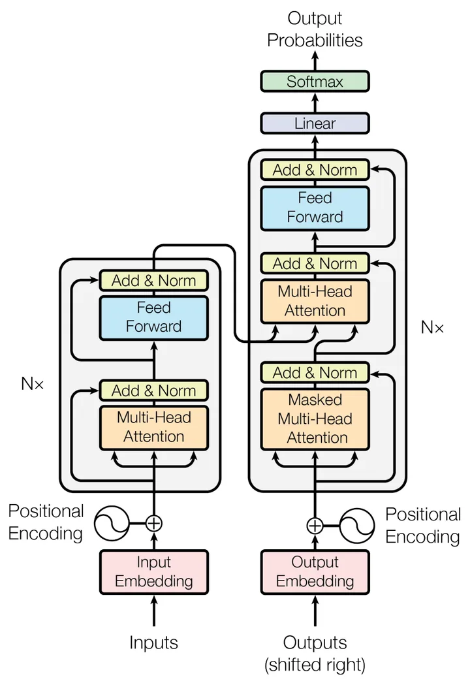
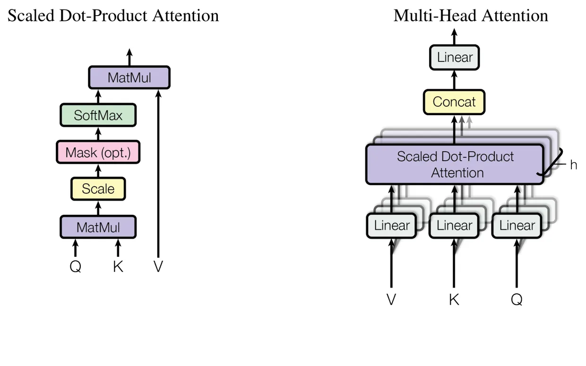

<!doctype html>
<html>
<head>
<meta charset="utf-8">
<meta name="viewport" content="width=device-width, initial-scale=1">
<title>DeepPaperNote Demo</title>
<!-- KaTeX 0.16.11, unmodified from the npm package (woff2 fonts only), so the demo needs no third-party CDN. -->
<link rel="stylesheet" href="katex/katex.min.css">
<script defer src="katex/katex.min.js"></script>
<style>
  /* Latin subsets copied from @fontsource; the stage stays hidden until fonts load, so swap never shows. */
  @font-face { font-family: "Cormorant Garamond"; font-weight: 500; font-display: swap; src: url("fonts/cormorant-garamond-latin-500-normal.woff2") format("woff2"); }
  @font-face { font-family: "Cormorant Garamond"; font-weight: 600; font-display: swap; src: url("fonts/cormorant-garamond-latin-600-normal.woff2") format("woff2"); }
  @font-face { font-family: "Cormorant Garamond"; font-weight: 700; font-display: swap; src: url("fonts/cormorant-garamond-latin-700-normal.woff2") format("woff2"); }
  @font-face { font-family: "Inter"; font-weight: 400; font-display: swap; src: url("fonts/inter-latin-400-normal.woff2") format("woff2"); }
  @font-face { font-family: "Inter"; font-weight: 500; font-display: swap; src: url("fonts/inter-latin-500-normal.woff2") format("woff2"); }
  @font-face { font-family: "Inter"; font-weight: 600; font-display: swap; src: url("fonts/inter-latin-600-normal.woff2") format("woff2"); }
  @font-face { font-family: "Inter"; font-weight: 700; font-display: swap; src: url("fonts/inter-latin-700-normal.woff2") format("woff2"); }
  @font-face { font-family: "JetBrains Mono"; font-weight: 400; font-display: swap; src: url("fonts/jetbrains-mono-latin-400-normal.woff2") format("woff2"); }
  @font-face { font-family: "JetBrains Mono"; font-weight: 500; font-display: swap; src: url("fonts/jetbrains-mono-latin-500-normal.woff2") format("woff2"); }
  :root {
    --canvas: #11100f; --surface-dark: #181715; --surface-elevated: #252320; --surface-elevated-2: #2f2c28;
    --cream: #faf9f5; --card: #efe9de; --cream-strong: #e8e0d2; --hairline-cream: #e6dfd8;
    --on-dark: #faf9f5; --on-dark-soft: #a09d96; --hairline: rgba(250,249,245,.14);
    --ink: #141413; --body: #3d3d3a; --muted: #6c6a64;
    --primary: #cc785c; --primary-active: #a9583e; --amber: #e8a55a; --teal: #5db8a6;
    --serif: "Cormorant Garamond", "Songti SC", "STSong", Georgia, serif;
    --sans: Inter, -apple-system, "PingFang SC", "Noto Sans SC", sans-serif;
    --mono: "JetBrains Mono", "PingFang SC", ui-monospace, Menlo, monospace;
  }
  * { box-sizing: border-box; margin: 0; padding: 0; font-variant-numeric: lining-nums; }
  html, body { width: 100%; height: 100%; overflow: hidden; background: var(--canvas); }
  body { font-family: var(--sans); color: var(--on-dark); -webkit-font-smoothing: antialiased; }
  .abs { position: absolute; }
  #stage { position: absolute; left: 0; top: 0; width: 960px; height: 560px; overflow: hidden; transform-origin: 0 0; opacity: 0;
    background: radial-gradient(circle at 14% 8%, rgba(204,120,92,.14), transparent 360px),
                radial-gradient(circle at 90% 20%, rgba(93,184,166,.08), transparent 380px), var(--canvas); }

  /* ---- opening ---- */
  #prompt { left: 50px; top: 34px; width: 860px; background: var(--surface-elevated); border: 1px solid var(--hairline); border-radius: 12px; overflow: hidden; }
  #prompt .bar { height: 32px; display: flex; align-items: center; gap: 7px; padding: 0 14px; border-bottom: 1px solid var(--hairline); font-size: 12px; color: var(--on-dark-soft); }
  #prompt .bar i { width: 9px; height: 9px; border-radius: 50%; background: var(--surface-elevated-2); display: inline-block; }
  #prompt .line { padding: 16px 20px; font-family: var(--mono); font-size: 17px; color: var(--on-dark); height: 56px; }
  #prompt .gt { color: var(--primary); margin-right: 10px; }
  .caret { display: inline-block; width: 9px; height: 19px; background: var(--primary); vertical-align: -3px; margin-left: 2px; }
  .pdfp { top: 150px; width: 232px; height: 300px; background: #fff; border-radius: 6px; overflow: hidden; box-shadow: 0 18px 50px -18px rgba(0,0,0,.7); }
  .pdfp img { width: 100%; display: block; }
  .scan { left: 0; width: 100%; height: 2px; background: var(--primary); box-shadow: 0 0 0 5px rgba(204,120,92,.22); }
  #status { left: 0; width: 960px; top: 478px; display: flex; justify-content: center; gap: 30px; }
  .st { display: flex; align-items: center; gap: 9px; font-size: 15px; color: var(--on-dark-soft); }
  .st .tk { width: 19px; height: 19px; border-radius: 50%; border: 1.5px solid var(--teal); font-size: 11px; color: var(--surface-dark); display: flex; align-items: center; justify-content: center; }
  .st.on { color: var(--on-dark); } .st.on .tk { background: var(--teal); }

  /* ---- note page ---- */
  #world { left: 0; top: 0; transform-origin: 0 0; }
  #page { position: relative; width: 860px; background: var(--cream); border-radius: 12px; padding: 34px 56px 46px; color: var(--body);
          box-shadow: 0 30px 90px -30px rgba(0,0,0,.7); }
  .fb { position: relative; }
  .fb::before { content: ""; position: absolute; left: -26px; top: 6px; bottom: 6px; width: 3px; border-radius: 2px; background: var(--primary); opacity: var(--mark, 0); }
  h1.t { font-family: var(--serif); font-size: 40px; font-weight: 700; color: var(--ink); letter-spacing: -.4px; line-height: 1.1; }
  .sub { font-size: 15px; color: var(--muted); margin-top: 4px; }
  .props { display: grid; grid-template-columns: 1fr 1fr; column-gap: 28px; margin: 14px 0 4px; padding: 10px 0; border-top: 1px solid var(--hairline-cream); border-bottom: 1px solid var(--hairline-cream); }
  .prop { display: flex; font-family: var(--mono); font-size: 12px; line-height: 1.85; }
  .prop span:first-child { width: 92px; flex: none; color: var(--muted); }
  .prop span:last-child { color: var(--ink); white-space: nowrap; overflow: hidden; text-overflow: ellipsis; }
  h2 { font-family: var(--serif); font-size: 25px; font-weight: 700; color: var(--ink); margin: 22px 0 8px; display: flex; align-items: center; justify-content: space-between; gap: 12px; }
  h3 { font-size: 15px; font-weight: 600; color: var(--ink); margin: 14px 0 6px; display: flex; align-items: center; justify-content: space-between; gap: 12px; }
  p, li { font-size: 14.5px; line-height: 1.8; }
  p + p { margin-top: 8px; }
  ul, ol { padding-left: 22px; }
  .two { display: grid; grid-template-columns: 1fr 1fr; column-gap: 28px; }
  b { color: var(--ink); }
  code { font-family: var(--mono); font-size: 12.5px; background: var(--card); padding: 1px 5px; border-radius: 4px; }
  table { border-collapse: collapse; width: 100%; font-size: 13.5px; margin: 8px 0 4px; }
  th { text-align: left; background: var(--card); padding: 7px 11px; color: var(--ink); font-weight: 600; }
  td { padding: 7px 11px; border-bottom: 1px solid var(--hairline-cream); }
  td.r, th.r { text-align: right; }
  table.dense { font-size: 13px; } table.dense td, table.dense th { padding: 4.5px 10px; }
  tr.hl td { background: #f6e7df; color: var(--ink); font-weight: 600; }
  .fig { display: block; margin: 8px auto 0; border-radius: 6px; background: #fff; border: 1px solid var(--hairline-cream); }
  .figrow { display: grid; grid-template-columns: 290px 1fr; column-gap: 30px; margin-top: 10px; }
  .cap { font-size: 13px; font-style: italic; color: var(--muted); margin: 6px 0 2px; text-align: center; }
  .tex { margin: 12px 0; padding: 14px 0; background: #fff; border: 1px solid var(--hairline-cream); border-radius: 8px; text-align: center; color: var(--ink); }
  .tex .katex { font-size: 1.45em; }
  .flow { display: flex; align-items: center; flex-wrap: wrap; gap: 6px 8px; margin: 4px 0 6px; font-size: 13.5px; }
  .flow .n { background: #fff; border: 1px solid var(--hairline-cream); border-radius: 6px; padding: 3px 10px; color: var(--ink); }
  .flow .a { color: var(--primary); font-weight: 700; }
  .wl { color: var(--primary-active); font-weight: 600; }
  .wl-li.glow .wl { background: rgba(204,120,92,.16); border-radius: 4px; padding: 0 3px; }
  .callout { border-left: 3px solid var(--teal); background: #eef5f2; border-radius: 0 8px 8px 0; padding: 10px 14px; font-size: 14px; line-height: 1.7; color: #35514a; }

  /* in-page annotation tags */
  .tag { display: inline-flex; font-family: var(--sans); font-size: 12.5px; font-weight: 600; border-radius: 999px; overflow: hidden; white-space: nowrap; letter-spacing: .2px; line-height: 1; flex: none; }
  .tag .s { background: var(--ink); color: var(--cream); padding: 6px 10px 6px 12px; }
  .tag .h { background: var(--primary); color: #fff; padding: 6px 13px; }
  .tag.float { position: absolute; right: 0; top: 0; }
  /* types annotation card */
  .tcard { margin: 26px 0 6px; border: 1.5px dashed var(--primary); border-radius: 12px; background: #fbf1ea; padding: 16px 20px; }
  .tcard .head { display: flex; align-items: center; justify-content: space-between; }
  .tcard .k { font-family: var(--serif); font-size: 23px; font-weight: 700; color: var(--ink); }
  .pills { display: flex; gap: 8px; margin: 12px 0 12px; }
  .pill { font-size: 13px; padding: 4px 12px; border-radius: 999px; border: 1px solid var(--cream-strong); background: #fff; color: var(--muted); }
  .pill.on { background: var(--ink); color: var(--cream); border-color: var(--ink); font-weight: 600; }
  .tflows { position: relative; height: 66px; }
  .tflows .flow { position: absolute; left: 0; top: 0; width: 100%; }

  /* ---- graph ---- */
  #graph { left: 0; top: 0; width: 960px; height: 560px; }
  #graph svg { position: absolute; left: 0; top: 0; }
  .gnode { position: absolute; width: 0; height: 0; white-space: nowrap; }
  .gnode .c { position: absolute; left: -8px; top: -8px; width: 16px; height: 16px; border-radius: 50%; background: var(--surface-elevated-2); border: 2px solid #5b5650; }
  .gnode .l { position: absolute; left: 13px; top: -10px; font-size: 13px; color: var(--on-dark-soft); }
  .gnode.lab-l .l { left: auto; right: 13px; }
  .gnode.lab-t .l { left: 0; top: -32px; transform: translateX(-50%); }
  .gnode.lab-b .l { left: 0; top: 12px; transform: translateX(-50%); }
  .gnode.new .c { left: -15px; top: -15px; width: 30px; height: 30px; background: var(--primary); border-color: #e9a68e; }
  .gnode.new .l { left: 20px; top: -14px; color: var(--on-dark); font-family: var(--serif); font-weight: 700; font-size: 22px; }
  .cluster { position: absolute; font-size: 12px; font-weight: 600; letter-spacing: 1.6px; color: var(--primary); }
  #folder { font-family: var(--mono); font-size: 13px; color: var(--on-dark); background: var(--surface-elevated); border: 1px solid var(--hairline); border-radius: 8px; padding: 6px 12px; }
  #tagline { width: 960px; text-align: center; font-family: var(--serif); font-size: 32px; font-weight: 600; color: var(--on-dark); }
  #tagline em { font-style: normal; color: var(--primary); }
  #brand { width: 960px; text-align: center; font-size: 12px; font-weight: 600; letter-spacing: 3px; color: var(--on-dark-soft); }

  /* ---- playback control ---- */
  #playback { position: fixed; right: 14px; bottom: 14px; z-index: 10; display: inline-flex; align-items: center; justify-content: center;
    width: 36px; height: 36px; padding: 0; border: 1px solid rgba(250,249,245,.16); border-radius: 50%;
    background: rgba(24,23,21,.52); color: var(--cream); cursor: pointer; opacity: .7;
    -webkit-backdrop-filter: blur(8px); backdrop-filter: blur(8px);
    transition: opacity 160ms ease, background-color 160ms ease, border-color 160ms ease; }
  #playback[hidden] { display: none; }
  #playback:hover, #playback:focus-visible { opacity: 1; background: rgba(37,35,32,.82); border-color: rgba(204,120,92,.55); }
  #playback:focus-visible { outline: 2px solid var(--primary); outline-offset: 2px; }
  #playback svg { display: block; width: 16px; height: 16px; fill: currentColor; }
  #playback .i-play, #playback[data-paused] .i-pause { display: none; }
  #playback[data-paused] .i-play { display: block; }
</style>
</head>
<body>
<div id="stage"></div>
<button id="playback" type="button" hidden>
  <svg class="i-pause" viewBox="0 0 24 24" aria-hidden="true" focusable="false"><rect x="6" y="5" width="4" height="14" rx="1.2"/><rect x="14" y="5" width="4" height="14" rx="1.2"/></svg>
  <svg class="i-play" viewBox="0 0 24 24" aria-hidden="true" focusable="false"><path d="M8 5.6v12.8a1 1 0 0 0 1.52.85l10.2-6.4a1 1 0 0 0 0-1.7L9.52 4.75A1 1 0 0 0 8 5.6Z"/></svg>
</button>
<script>
const LANG = new URLSearchParams(location.search).get("lang") || "zh";
const T = {
zh: {
  bar: "Claude Code · Codex · 任何支持 skill 的 Agent",
  pause: "暂停演示", play: "播放演示",
  prompt: "给这篇论文生成深度笔记：Attention Is All You Need",
  steps: ["找到原文", "读完全文", "提取图表", "写成笔记，存进知识库"],
  sub: "以自注意力重构序列转换",
  props: [["paper_type", "method"], ["tags", "papers/自然语言处理"], ["methods", "[Transformer, 多头自注意力, 正弦位置编码, …]"], ["datasets", "[WMT 2014 英德, WMT 2014 英法, WSJ]"], ["tasks", "[机器翻译, 英语成分句法解析]"], ["read_date", "2026-11-08"]],
  html: {
    info: `<h2>核心信息<span class="tag" id="tag_open"></span></h2>
      <ul class="two"><li>作者：Ashish Vaswani、Noam Shazeer 等 8 人</li><li>机构：Google Brain、Google Research、多伦多大学</li><li>发表渠道：NIPS 2017</li><li>arXiv：1706.03762v5</li><li>代码：tensorflow/tensor2tensor</li><li>论文类型：方法论文</li></ul>`,
    abs: `<h2>原文摘要翻译</h2><p>当时占主导地位的序列转换模型基于复杂的循环神经网络或卷积神经网络，并包含编码器和解码器。我们提出一种新的简单网络架构 <code>Transformer</code>，完全基于注意力机制，彻底去掉循环与卷积。模型在 WMT 2014 英德翻译任务上取得 28.4 BLEU，比已有最佳结果（包括集成模型）高出超过 2 BLEU……</p>`,
    innov: `<h2>创新点<span class="tag" id="tag_one"></span></h2><ol><li>用堆叠自注意力替换序列表示中的循环或卷积主干。位置之间根据内容直接交换信息，减少训练中沿位置逐步递推的限制。</li><li>把缩放点积与多头投影组合成可高效矩阵化的交互模块：前者控制匹配分数的尺度，后者让多个表示子空间分别聚合信息。</li><li>在没有循环顺序的架构中，用位置编码提供顺序，用目标右移与因果掩码维持合法的逐词预测。</li><li>同时给出翻译质量、训练成本、组件消融和句法解析迁移，证明这套架构能独立承担序列转换。</li></ol>`,
    one: `<h2>一句话总结</h2><p><code>Transformer</code> 将序列位置之间的信息交换改为可并行的多头内容寻址，在当时的翻译设置中取得更好的质量与训练成本，但生成仍逐词进行，长序列成本和长度外推也没有因此自动解决。</p>`,
    bg: `<h2>背景与问题<span class="tag" id="tag_bg"></span></h2><p><b>这篇论文要解决的是高质量序列转换中的计算依赖问题。</b>循环神经网络沿词的位置更新隐藏状态，后一个位置必须等待前一个位置完成。即使扩大批量、并行处理不同句子，同一句内部的递推链仍然存在。本文的研究问题是：去掉这种位置递推以后，能否仍然保持翻译质量，并缩短训练时间？</p>`,
    prior: `<h2>现有方法的局限</h2><table><tr><th>已有路线</th><th>具体瓶颈</th><th>本文对应的改动</th></tr>
      <tr><td>循环序列模型，如 LSTM</td><td>同一句内的状态沿位置递推，远距离信号穿过长链</td><td>用自注意力直接连接位置</td></tr>
      <tr><td>卷积序列模型，如 ConvS2S、ByteNet</td><td>可并行计算，但远距离交互需要叠层</td><td>用全局成对匹配缩短交互路径</td></tr>
      <tr><td>单个注意力汇总</td><td>不同信息混成一次加权平均，难以同时保留多种关系</td><td>在不同投影子空间中分别计算多个头</td></tr></table>`,
    idea: `<h2>核心思路与挑战</h2><p>核心思路是让每个位置直接根据内容选择其他位置的信息，再把不同关系的汇总结果组合起来。实现它需要解决三个问题：全局加权平均容易混合不同关系，匹配分数也会随维度变大；没有循环和卷积以后，模型缺少顺序来源；训练时能看到完整目标句，却不能让当前位置偷看未来答案。</p>`,
    flow: `<h2>方法<span class="tag" id="tag_flow"></span></h2><h3>方法流程</h3><div class="flow"><span class="n">子词编码</span><span class="a">→</span><span class="n">编码源句</span><span class="a">→</span><span class="n">准备目标前缀</span><span class="a">→</span><span class="n">解码与对齐</span><span class="a">→</span><span class="n">预测与更新</span></div>
      <table><tr><th>步骤</th><th>输入</th><th>做什么</th><th>输出</th><th>本文新做法</th></tr>
      <tr><td>子词编码</td><td>源句与目标句</td><td>分词、嵌入并加位置编码</td><td>位置化向量</td><td>是，正弦位置编码</td></tr>
      <tr><td>编码源句</td><td>源句向量</td><td>堆叠多头自注意力与前馈</td><td>源句上下文表示</td><td>是，以自注意力构建主干</td></tr>
      <tr><td>准备目标前缀</td><td>目标序列或已生成词</td><td>右移并施加因果掩码</td><td>合法目标前缀</td><td>否，沿用自回归建模</td></tr>
      <tr><td>解码与对齐</td><td>前缀及源句表示</td><td>掩码自注意力、跨注意力与前馈</td><td>目标位置表示</td><td>是，以自注意力构建解码主干</td></tr>
      <tr><td>预测与更新</td><td>目标位置表示</td><td>训练算平滑损失，推理做束搜索</td><td>参数更新或输出序列</td><td>否，使用已有组件</td></tr></table>`,
    fig1: `<span class="tag float" id="tag_fig"></span><div class="figrow"><div><div class="cap" style="text-align:left">论文原图编号：Fig. 1。编码器与解码器的完整结构，展示位置输入、三类注意力、残差和输出路径。</div></div>
      <div style="padding-top:34px"><h3 style="margin-top:0">训练与推理</h3><p>训练和推理共享架构，但目标前缀的来源不同。训练使用已知的正确目标前缀，可以同时计算各目标位置的预测；推理只拥有已经生成的前缀，必须产生新词后才能继续。</p><p>这一区别决定了本文的并行收益首先体现在训练，而不是消除生成的逐步依赖。</p></div></div>`,
    attn: `<h3>缩放点积与多头</h3><p>一个注意力头先决定“该看哪里”，再汇总“那里有什么”。查询矩阵 <span class="itex">Q</span> 表示当前位置要找的信息，键矩阵 <span class="itex">K</span> 提供可匹配的索引，值矩阵 <span class="itex">V</span> 提供被汇总的内容。</p>`,
    tex: `<span class="tag float" id="tag_tex" style="top:-6px"></span><div class="tex" data-tex="\\begin{aligned}\\operatorname{Attention}(Q,K,V)&=\\operatorname{softmax}\\!\\left(\\frac{QK^{\\top}}{\\sqrt{d_k}}+M\\right)V,\\\\ \\operatorname{head}_i&=\\operatorname{Attention}(QW_i^Q,KW_i^K,VW_i^V),\\\\ \\operatorname{MultiHead}(Q,K,V)&=\\operatorname{Concat}(\\operatorname{head}_1,\\ldots,\\operatorname{head}_h)W^O.\\end{aligned}"></div>
      <p>第一行把各查询与全部键的匹配分数转成权重，再对值加权；后两行在多个投影空间中重复这一操作，拼接后映射回模型维度。掩码 <span class="itex">M</span> 在合法连接处取零、非法连接处取负无穷。缩放的动机是：在分量独立、均值为零、方差为一的假设下，点积方差随 <span class="itex">d_k</span> 增长，除以其平方根可控制尺度。</p>`,
    fig2: `<p>基础模型使用 8 个头，模型维度为 512，每头键和值的维度均为 64。多头并不是复制八个完整宽度的注意力，而是把总宽度分配给多个子空间，所以总计算量与一个完整宽度的头相近。</p><div class="cap">论文原图编号：Fig. 2。左侧给出缩放、掩码和加权汇总，右侧展示多头投影、并行计算与拼接。</div>`,
    attn3: `<h3>三种注意力和因果约束<span class="tag" id="tag_mech"></span></h3><table><tr><th>模块</th><th>查询来源</th><th>键和值来源</th><th>可见范围</th></tr>
      <tr><td>编码器自注意力</td><td>当前源句表示</td><td>同一源句表示</td><td>全部源位置</td></tr>
      <tr><td>解码器掩码自注意力</td><td>当前目标表示</td><td>同一目标表示</td><td>当前及此前的输入位置</td></tr>
      <tr><td>编码器与解码器间的跨注意力</td><td>解码器表示</td><td>编码器最终输出</td><td>全部源位置</td></tr></table>
      <p>目标右移与因果掩码必须一起理解：预测第 <span class="itex">t</span> 个目标词时，该位置装的是前一个目标词，因此关注当前输入位置仍不等于看到当前答案。</p>`,
    pe: `<h3>位置、前馈与残差</h3><p>正弦位置编码为相同内容在不同位置提供不同输入，编码器和解码器都在底部把它与词向量相加：</p>
      <div class="tex" data-tex="\\operatorname{PE}_{(p,2i)}=\\sin\\!\\left(\\frac{p}{10000^{2i/d_{\\mathrm{model}}}}\\right),\\qquad \\operatorname{PE}_{(p,2i+1)}=\\cos\\!\\left(\\frac{p}{10000^{2i/d_{\\mathrm{model}}}}\\right)"></div>
      <p>固定偏移后的编码可由原编码作线性变换表示，这是作者认为模型容易学习相对位置的理由；它不保证训练后一定获得长度外推能力。前馈网络先把 512 维映射到 2048 维、经 ReLU 后投回 512 维；子层采用 <span class="itex">\\operatorname{LayerNorm}(x+\\operatorname{Sublayer}(x))</span>。</p>`,
    train: `<h3>训练与解码配方<span class="tag" id="tag_train"></span></h3><p>Adam 优化器取 <span class="itex">\\beta_1=0.9,\\ \\beta_2=0.98,\\ \\epsilon=10^{-9}</span>，学习率先线性预热，再按步数平方根倒数衰减：</p>
      <div class="tex" data-tex="\\eta(s)=d_{\\mathrm{model}}^{-1/2}\\min\\!\\left(s^{-1/2},\\ s\\,w^{-3/2}\\right),\\qquad w=4000"></div>
      <table><tr><th>设置</th><th>基础模型</th><th>大模型或任务差异</th></tr>
      <tr><td>模型维度／前馈维度</td><td>512／2048</td><td>1024／4096</td></tr>
      <tr><td>头数／参数量</td><td>8／约 6500 万</td><td>16／约 2.13 亿</td></tr>
      <tr><td>训练步数／时长</td><td>10 万步／约 12 小时</td><td>30 万步／约 3.5 天</td></tr>
      <tr><td>硬件</td><td>单机 8 张 NVIDIA P100</td><td>相同</td></tr>
      <tr><td>丢弃率</td><td>0.1</td><td>英德大模型 0.3；英法大模型 0.1</td></tr>
      <tr><td>检查点平均</td><td>最后 5 个，每 10 分钟保存</td><td>最后 20 个</td></tr></table>`,
    res: `<h2>实验证据</h2><h3>翻译主结果<span class="tag" id="tag_tab"></span></h3><p>英德大模型在 newstest2014 上达到 28.4，高于表中最佳集成的 26.36，差值为 2.04；基础模型也达到 27.3。</p>
      <table class="dense"><tr><th>模型</th><th class="r">英德 BLEU</th><th class="r">英法 BLEU</th><th class="r">英德训练 FLOPs</th><th class="r">英法训练 FLOPs</th></tr>
      <tr><td>ByteNet</td><td class="r">23.75</td><td class="r">未列</td><td class="r">未列</td><td class="r">未列</td></tr>
      <tr><td>GNMT + RL</td><td class="r">24.6</td><td class="r">39.92</td><td class="r"><span class="itex">2.3\\times10^{19}</span></td><td class="r"><span class="itex">1.4\\times10^{20}</span></td></tr>
      <tr><td>ConvS2S</td><td class="r">25.16</td><td class="r">40.46</td><td class="r"><span class="itex">9.6\\times10^{18}</span></td><td class="r"><span class="itex">1.5\\times10^{20}</span></td></tr>
      <tr><td>MoE</td><td class="r">26.03</td><td class="r">40.56</td><td class="r"><span class="itex">2.0\\times10^{19}</span></td><td class="r"><span class="itex">1.2\\times10^{20}</span></td></tr>
      <tr><td>GNMT + RL 集成</td><td class="r">26.30</td><td class="r">41.16</td><td class="r"><span class="itex">1.8\\times10^{20}</span></td><td class="r"><span class="itex">1.1\\times10^{21}</span></td></tr>
      <tr><td>ConvS2S 集成</td><td class="r">26.36</td><td class="r">41.29</td><td class="r"><span class="itex">7.7\\times10^{19}</span></td><td class="r"><span class="itex">1.2\\times10^{21}</span></td></tr>
      <tr><td>Transformer 基础模型</td><td class="r">27.3</td><td class="r">38.1</td><td class="r" colspan="2" style="text-align:center"><span class="itex">3.3\\times10^{18}</span></td></tr>
      <tr class="hl"><td>Transformer 大模型</td><td class="r">28.4</td><td class="r">41.8</td><td class="r" colspan="2" style="text-align:center"><span class="itex">2.3\\times10^{19}</span></td></tr></table>
      <p><b>英法分数存在内部不一致</b>：摘要与表 2 给出 41.8，第 6.1 节正文写成 41.0。若采用 41.0，仍超过表中最佳单模型 40.56，但不超过最佳集成 41.29。训练成本是用时长、设备数和估计算力相乘得到的估算，不是统一设备上的测量。</p>`,
    abl: `<h3>组件消融<span class="tag" id="tag_abl"></span></h3><p>表 3 用英德开发集 newstest2013，不做检查点平均。消融支持适当分头和正则化的作用，但不支持“头越多、层越深就越好”。</p>
      <table class="dense"><tr><th>消融组</th><th>改动（其余沿用基础模型）</th><th class="r">开发集 PPL</th><th class="r">开发集 BLEU</th></tr>
      <tr class="hl"><td>基准</td><td>6 层、512 维、8 头</td><td class="r">4.92</td><td class="r">25.8</td></tr>
      <tr><td>A</td><td>1 头，每头键／值维度 512</td><td class="r">5.29</td><td class="r">24.9</td></tr>
      <tr><td>A</td><td>16 头，每头 32</td><td class="r">4.91</td><td class="r">25.8</td></tr>
      <tr><td>A</td><td>32 头，每头 16</td><td class="r">5.01</td><td class="r">25.4</td></tr>
      <tr><td>B</td><td>键维度 16，值维度不变</td><td class="r">5.16</td><td class="r">25.1</td></tr>
      <tr><td>C</td><td>层数 2</td><td class="r">6.11</td><td class="r">23.7</td></tr>
      <tr><td>C</td><td>层数 8</td><td class="r">4.88</td><td class="r">25.5</td></tr>
      <tr><td>D</td><td>丢弃率 0</td><td class="r">5.77</td><td class="r">24.6</td></tr>
      <tr><td>D</td><td>标签平滑 0</td><td class="r">4.67</td><td class="r">25.3</td></tr>
      <tr><td>E</td><td>可学习位置嵌入代替正弦编码</td><td class="r">4.92</td><td class="r">25.7</td></tr></table>
      <p>去掉标签平滑时，困惑度从 4.92 改善到 4.67，翻译成绩却从 25.8 降到 25.3：如果只按困惑度挑模型，会错过任务指标上的差异。8 层的 25.5 也低于 6 层的 25.8。</p>`,
    chal: `<h3>挑战与证据对应<span class="tag" id="tag_chal"></span></h3><table><tr><th>挑战</th><th>解决它的模块</th><th>支撑实验</th><th>缺少的对照</th></tr>
      <tr><td>训练位置串行和远距传播</td><td>全局自注意力主干</td><td>表 1 结构比较；表 2 质量及成本</td><td>同数据、同预算重训的主干替换</td></tr>
      <tr><td>单次汇总混合关系</td><td>多头投影</td><td>表 3 的 A、B 组</td><td>按依赖距离分桶，隔离头数和单头维度</td></tr>
      <tr><td>训练过拟合与过度确信</td><td>丢弃法、标签平滑</td><td>表 3 的 D 组</td><td>多次运行与方差</td></tr>
      <tr><td>无循环后的顺序信息</td><td>正弦或学习式位置编码</td><td>表 3 的 E 组</td><td>去掉位置编码、训练外长度测试</td></tr>
      <tr><td>严格结构输出</td><td>序列解码器与任务搜索设置</td><td>表 4 解析结果</td><td>跨更多结构任务的统一预算测试</td></tr></table>
      <p>表 3 没有取消缩放的独立消融，无法隔离缩放的贡献；附录注意力连线也没有干预对照，不能证明这些连线具有因果解释力。</p>`,
    deep: `<h2>深度分析<span class="tag" id="tag_deep"></span></h2><h3>并行与复杂度的条件</h3><p>自注意力的优势是减少信息传播的串行步骤，而不是无条件减少全部计算。原文表 1 用序列长度 <span class="itex">n</span>、表示宽度 <span class="itex">d</span>、卷积核宽度 <span class="itex">k</span> 和局部邻域大小 <span class="itex">r</span> 比较不同层：</p>
      <table><tr><th>层类型</th><th>每层复杂度</th><th>最少串行操作</th><th>最大传播路径</th></tr>
      <tr><td>全局自注意力</td><td><span class="itex">O(n^2d)</span></td><td><span class="itex">O(1)</span></td><td><span class="itex">O(1)</span></td></tr>
      <tr><td>循环层</td><td><span class="itex">O(nd^2)</span></td><td><span class="itex">O(n)</span></td><td><span class="itex">O(n)</span></td></tr>
      <tr><td>卷积层</td><td><span class="itex">O(knd^2)</span></td><td><span class="itex">O(1)</span></td><td><span class="itex">O(\\log_k n)</span>（扩张卷积）</td></tr>
      <tr><td>局部受限自注意力</td><td><span class="itex">O(rnd)</span></td><td><span class="itex">O(1)</span></td><td><span class="itex">O(n/r)</span></td></tr></table>
      <p>“<span class="itex">n&lt;d</span> 时自注意力更省”有适用范围：完整的块还包含约 <span class="itex">O(nd^2)</span> 的投影与前馈运算，长度增长会让成对交互成本变重，常规实现的分数存储也随长度平方增长。训练更并行也不等于生成更并行，自回归解码仍逐词进行。</p>`,
    lim: `<h2>局限<span class="tag" id="tag_lim"></span></h2><ul><li>证据覆盖两个翻译语对和一个英语解析任务，没有证明任意任务、数据规模或输入类型都适用。</li><li>本文保留自回归解码，论文未列出统一条件下的生成延迟和吞吐比较，不能由训练时长推出部署速度。</li><li>文献基线没有统一重训预算，也没有随机种子重复、置信区间或显著性检验；接近的消融分数不能认定差异稳定。</li></ul>`,
    take: `<h2>阅读收获<span class="tag" id="tag_take"></span></h2><h3>可迁移</h3><ul><li>把全局交互交给多头自注意力，把逐位置变换交给共享前馈网络，可迁移到中等长度序列任务；前提是成对交互成本可承受，并有合适的位置表示。</li><li>复用标签平滑时同时观察困惑度与任务指标：本文困惑度改善而翻译分数下降的消融说明，选模型前须明确最终目标。</li></ul><h3>下一步</h3><ul><li>固定数据、参数量和训练预算，重复比较 1、8、32 头，并按依赖距离分桶，检验多头收益是否真来自长距建模。</li></ul>`,
    conn: `<h2>关联<span class="tag" id="tag_conn"></span></h2><h3>库内笔记</h3><ul>
      <li class="wl-li"><span class="wl">[[Seq2Seq]]</span>（前置：编码器解码器与自回归序列转换基础）</li>
      <li class="wl-li"><span class="wl">[[Bahdanau Attention]]</span>（前置：注意力对齐）</li>
      <li class="wl-li"><span class="wl">[[ConvS2S]]</span>（对照：并行卷积主干与翻译强基线）</li>
      <li class="wl-li"><span class="wl">[[GNMT]]</span>（基线：循环翻译系统）</li>
      <li class="wl-li"><span class="wl">[[BERT]]</span>（后续：基于 Transformer 编码器的预训练）</li></ul>`,
    mine: `<h2>我的笔记<span class="tag" id="tag_mine"></span></h2><div class="callout">这一节留给你自己：写下你的判断、它和你研究的联系、想验证的点。重新生成这篇笔记时，这一节会原样保留。</div>`,
  },
  tagtext: {
    tag_open: "一眼看懂这篇论文", tag_one: "一句话抓住贡献",
    tag_bg: "笔记顺着论文的故事线展开", tag_flow: "先看全貌，再拆步骤",
    tag_fig: "原图嵌在正文里", tag_tex: "公式直接渲染", tag_mech: "容易忽略的细节也讲清", tag_train: "细到训练配方",
    tag_tab: "数字取自原文", tag_abl: "反直觉的结果也写出来", tag_chal: "主张与证据逐条对照",
    tag_deep: "讲透为什么有效、代价在哪", tag_lim: "论文没证明什么，直说",
    tag_take: "这篇论文对你有什么用", tag_conn: "连到你读过的论文", tag_mine: "留给你自己写",
  },
  graph: { clusters: ["自然语言处理", "计算机视觉"], folder: "自然语言处理 / Attention_Is_All_You_Need /",
    tagline: "每读一篇，你的<em>学术 Wiki</em> 就长大一点。" },
},
en: {
  bar: "Claude Code · Codex · any agent that supports skills",
  pause: "Pause demo", play: "Play demo",
  prompt: "Write a deep-reading note for Attention Is All You Need",
  steps: ["Find the paper", "Read it in full", "Extract figures", "Write the note into your vault"],
  sub: "Sequence transduction rebuilt on self-attention",
  props: [["paper_type", "method"], ["tags", "papers/NLP"], ["methods", "[Transformer, Multi-head attention, …]"], ["datasets", "[WMT 2014 En-De, WMT 2014 En-Fr, WSJ]"], ["tasks", "[Machine translation, Parsing]"], ["read_date", "2026-11-08"]],
  html: {
    info: `<h2>Core Information<span class="tag" id="tag_open"></span></h2>
      <ul class="two"><li>Authors: Ashish Vaswani, Noam Shazeer, et al. (8)</li><li>Institutions: Google Brain, Google Research, U. Toronto</li><li>Venue: NIPS 2017</li><li>arXiv: 1706.03762v5</li><li>Code: tensorflow/tensor2tensor</li><li>Paper type: Method</li></ul>`,
    abs: `<h2>Abstract</h2><p>The dominant sequence transduction models are based on complex recurrent or convolutional neural networks that include an encoder and a decoder. We propose a new simple network architecture, the <code>Transformer</code>, based solely on attention mechanisms, dispensing with recurrence and convolutions entirely. Our model achieves 28.4 BLEU on the WMT 2014 English-to-German translation task, improving over the existing best results, including ensembles, by over 2 BLEU…</p>`,
    innov: `<h2>Contributions<span class="tag" id="tag_one"></span></h2><ol><li>Self-attention becomes the main operation that mixes information across positions in a complete encoder-decoder model, so positions within a training example are processed in parallel.</li><li>Scaled dot-product attention and multiple learned heads make global interaction practical: scaling controls score magnitudes, and heads keep several weighted summaries in different learned spaces.</li><li>Explicit positional signals, causal decoder masking and position-wise layers turn the idea into a working translation system.</li><li>Translation comparisons, component ablations and a parsing transfer experiment show the architecture is more than a conceptual proposal.</li></ol>`,
    one: `<h2>One-Sentence Summary</h2><p>The <code>Transformer</code> replaces recurrent sequence computation with global multi-head attention, improving the reported translation quality and training-cost trade-off while keeping explicit order information and autoregressive generation.</p>`,
    bg: `<h2>Background and Problem<span class="tag" id="tag_bg"></span></h2><p><b>The paper targets a computational dependency in recurrent networks.</b> A recurrent layer computes each hidden state from the previous one, so training must traverse a sentence position by position. Larger batches can parallelize different sentences, yet cannot remove the chain inside one sentence. Attention already lets a model read selected source positions directly, but adding it to a recurrent model leaves the recurrence in place. The paper asks whether attention can replace that computation throughout the encoder and decoder while keeping translation quality.</p>`,
    prior: `<h2>Limitations of Prior Work</h2><table><tr><th>Prior route</th><th>Specific gap</th><th>Requirement for the new design</th></tr>
      <tr><td>Recurrent encoder-decoder, with or without attention</td><td>Each hidden state still depends on the previous one</td><td>Mix positions without a recurrent chain</td></tr>
      <tr><td>Convolutional models such as ByteNet and ConvS2S</td><td>Local kernels need many layers to connect distant positions</td><td>Direct global communication, still parallel</td></tr>
      <tr><td>A single attention-weighted summary</td><td>Averaging can blend relations that need separate representations</td><td>Several learned views without full-width cost each</td></tr></table>`,
    idea: `<h2>Key Idea and Challenges</h2><p>Each position builds its next representation by reading other positions through learned attention weights, and a shared position-wise network then transforms what it retrieved. Three problems stand in the way: large dot products can make attention nearly one-hot and leave small gradients; one weighted average can obscure distinct relationships; and without recurrence the model loses its ordering signal, while unrestricted decoder attention would expose future answers during training.</p>`,
    flow: `<h2>Method<span class="tag" id="tag_flow"></span></h2><h3>Method Workflow</h3><div class="flow"><span class="n">Encode tokens and positions</span><span class="a">→</span><span class="n">Build source memory</span><span class="a">→</span><span class="n">Build causal target context</span><span class="a">→</span><span class="n">Read source and transform</span><span class="a">→</span><span class="n">Fit or generate</span></div>
      <table class="dense"><tr><th>Step</th><th>Input</th><th>What happens</th><th>Output</th><th>New in this paper</th></tr>
      <tr><td>Encode tokens and positions</td><td>Source and shifted target tokens</td><td>Add position vectors to scaled embeddings</td><td>Ordered token vectors</td><td>Sinusoidal position scheme</td></tr>
      <tr><td>Build source memory</td><td>Source vectors</td><td>Stack self-attention and feed-forward layers</td><td>Contextual encoder memory</td><td>Attention-only position mixing</td></tr>
      <tr><td>Build causal target context</td><td>Shifted target vectors</td><td>Apply masked self-attention</td><td>Prefix-dependent target states</td><td>Masked multi-head decoder</td></tr>
      <tr><td>Read source and transform</td><td>Target states and source memory</td><td>Cross-attend, then feed-forward</td><td>Source-conditioned decoder states</td><td>Multi-head source attention</td></tr>
      <tr><td>Fit or generate</td><td>Decoder states</td><td>Predict vocabulary probabilities</td><td>Smoothed loss or beam output</td><td>Existing methods</td></tr></table>`,
    fig1: `<span class="tag float" id="tag_fig"></span><div class="figrow"><div><div class="cap" style="text-align:left">Original paper item: Figure 1. The complete encoder-decoder architecture, with shifted target inputs, positional additions, residual paths and the output head.</div></div>
      <div style="padding-top:34px"><h3 style="margin-top:0">Training versus generation</h3><p>Training and generation share the same conditional structure with different target inputs. During training, shifted reference tokens provide the preceding targets, so all known target positions are processed together under the causal mask.</p><p>During generation the next target is unknown until the decoder predicts it, so generation still proceeds one token at a time. The parallel gain is a training gain.</p></div></div>`,
    attn: `<h3>Scaled attention and multiple heads</h3><p>Attention turns content similarity into weighted retrieval. A query <span class="itex">Q</span> says what the current position seeks, a key <span class="itex">K</span> says how a candidate matches, and a value <span class="itex">V</span> supplies that position's information.</p>`,
    tex: `<span class="tag float" id="tag_tex" style="top:-6px"></span><div class="tex" data-tex="\\begin{aligned}\\operatorname{Attention}(Q,K,V)&=\\operatorname{softmax}\\!\\left(\\frac{QK^{\\top}}{\\sqrt{d_k}}+M\\right)V,\\\\ \\operatorname{head}_i&=\\operatorname{Attention}(QW_i^Q,KW_i^K,VW_i^V),\\\\ \\operatorname{MultiHead}(Q,K,V)&=\\operatorname{Concat}(\\operatorname{head}_1,\\ldots,\\operatorname{head}_h)W^O.\\end{aligned}"></div>
      <p>The additive mask <span class="itex">M</span> is zero on allowed links and negative infinity on forbidden ones. If query and key components are independent with zero mean and unit variance, their dot product has variance <span class="itex">d_k</span>; dividing by <span class="itex">\\sqrt{d_k}</span> keeps it at order one. That is a variance argument, not a scaled-versus-unscaled ablation.</p>`,
    fig2: `<p>In the base model, <span class="itex">d_{\\mathrm{model}}=512</span>, <span class="itex">h=8</span> and each head has <span class="itex">d_k=d_v=64</span>. Splitting a fixed total width keeps attention cost close to one full-width head while allowing different matching functions.</p><div class="cap">Original paper item: Figure 2. Scaled attention on the left and projected parallel heads on the right.</div>`,
    attn3: `<h3>Layers, positions, and valid prediction<span class="tag" id="tag_mech"></span></h3><table><tr><th>Attention location</th><th>Query source</th><th>Key and value source</th><th>Allowed positions</th></tr>
      <tr><td>Encoder self-attention</td><td>Encoder states</td><td>Same encoder states</td><td>All source positions</td></tr>
      <tr><td>Decoder self-attention</td><td>Decoder states</td><td>Same decoder states</td><td>Current and earlier inputs</td></tr>
      <tr><td>Encoder-decoder attention</td><td>Decoder states</td><td>Final encoder memory</td><td>All source positions</td></tr></table>
      <p>Target shifting and masking must work together: the decoder input at a position holds the preceding output token, so attending to it is valid, while masking later positions keeps reference tokens out of reach.</p>`,
    pe: `<p>Position vectors give attention access to order. They are added to the embeddings at the bottom of both stacks:</p>
      <div class="tex" data-tex="\\operatorname{PE}_{(p,2i)}=\\sin\\!\\left(\\frac{p}{10000^{2i/d_{\\mathrm{model}}}}\\right),\\qquad \\operatorname{PE}_{(p,2i+1)}=\\cos\\!\\left(\\frac{p}{10000^{2i/d_{\\mathrm{model}}}}\\right)"></div>
      <p>Different frequencies let relative offsets be expressed as linear transformations; the authors hoped this would extrapolate to longer sequences, but do not test it. The feed-forward network expands width 512 to 2048 and back, and each sublayer is wrapped as <span class="itex">\\operatorname{LayerNorm}(x+\\operatorname{Sublayer}(x))</span>.</p>`,
    train: `<h3>Training and decoding recipe<span class="tag" id="tag_train"></span></h3><p>Adam with <span class="itex">\\beta_1=0.9,\\ \\beta_2=0.98,\\ \\epsilon=10^{-9}</span>; the learning rate warms up linearly, then decays with the inverse square root of the step:</p>
      <div class="tex" data-tex="\\operatorname{lr}(s)=d_{\\mathrm{model}}^{-1/2}\\min\\!\\left(s^{-1/2},\\ s\\cdot 4000^{-3/2}\\right)"></div>
      <table><tr><th>Setting</th><th>Base</th><th>Big, or what differs</th></tr>
      <tr><td>Model width / feed-forward width</td><td>512 / 2048</td><td>1024 / 4096</td></tr>
      <tr><td>Heads / parameters</td><td>8 / 65M</td><td>16 / 213M</td></tr>
      <tr><td>Steps / training time</td><td>100K / about 12 hours</td><td>300K / about 3.5 days</td></tr>
      <tr><td>Hardware</td><td>One machine, 8 NVIDIA P100</td><td>Same</td></tr>
      <tr><td>Dropout</td><td>0.1</td><td>0.3 for En-De big; 0.1 for En-Fr big</td></tr>
      <tr><td>Checkpoint averaging</td><td>Last 5, written 10 min apart</td><td>Last 20</td></tr></table>`,
    res: `<h2>Experimental Evidence</h2><h3>Translation quality and estimated training cost<span class="tag" id="tag_tab"></span></h3><p>Transformer big reaches 28.4 BLEU on English-German, against 26.36 for the strongest listed ensemble, a margin of 2.04. Base reaches 27.3 and also beats every listed En-De ensemble.</p>
      <table class="dense"><tr><th>Model</th><th class="r">En-De BLEU</th><th class="r">En-Fr BLEU</th><th class="r">En-De FLOPs</th><th class="r">En-Fr FLOPs</th></tr>
      <tr><td>ByteNet</td><td class="r">23.75</td><td class="r">—</td><td class="r">—</td><td class="r">—</td></tr>
      <tr><td>GNMT + RL</td><td class="r">24.6</td><td class="r">39.92</td><td class="r"><span class="itex">2.3\\times10^{19}</span></td><td class="r"><span class="itex">1.4\\times10^{20}</span></td></tr>
      <tr><td>ConvS2S</td><td class="r">25.16</td><td class="r">40.46</td><td class="r"><span class="itex">9.6\\times10^{18}</span></td><td class="r"><span class="itex">1.5\\times10^{20}</span></td></tr>
      <tr><td>MoE</td><td class="r">26.03</td><td class="r">40.56</td><td class="r"><span class="itex">2.0\\times10^{19}</span></td><td class="r"><span class="itex">1.2\\times10^{20}</span></td></tr>
      <tr><td>GNMT + RL ensemble</td><td class="r">26.30</td><td class="r">41.16</td><td class="r"><span class="itex">1.8\\times10^{20}</span></td><td class="r"><span class="itex">1.1\\times10^{21}</span></td></tr>
      <tr><td>ConvS2S ensemble</td><td class="r">26.36</td><td class="r">41.29</td><td class="r"><span class="itex">7.7\\times10^{19}</span></td><td class="r"><span class="itex">1.2\\times10^{21}</span></td></tr>
      <tr><td>Transformer base</td><td class="r">27.3</td><td class="r">38.1</td><td class="r" colspan="2" style="text-align:center"><span class="itex">3.3\\times10^{18}</span></td></tr>
      <tr class="hl"><td>Transformer big</td><td class="r">28.4</td><td class="r">41.8</td><td class="r" colspan="2" style="text-align:center"><span class="itex">2.3\\times10^{19}</span></td></tr></table>
      <p><b>The French score needs a caveat</b>: the abstract and Table 2 report 41.8, but Section 6.1 says 41.0. Both beat the best listed single model, 40.56, yet only 41.8 beats the 41.29 ensemble. FLOPs are the authors' estimates from training time, GPU count and assumed GPU throughput, not measured counts.</p>`,
    abl: `<h3>Component ablations<span class="tag" id="tag_abl"></span></h3><p>Table 3 uses En-De newstest2013 without checkpoint averaging. Several heads help, but more heads or more layers are not always better.</p>
      <table class="dense"><tr><th>Family</th><th>Change from base</th><th class="r">Dev PPL</th><th class="r">Dev BLEU</th></tr>
      <tr class="hl"><td>Reference</td><td>6 layers, width 512, 8 heads</td><td class="r">4.92</td><td class="r">25.8</td></tr>
      <tr><td>A</td><td>1 head, key and value width 512</td><td class="r">5.29</td><td class="r">24.9</td></tr>
      <tr><td>A</td><td>16 heads, widths 32</td><td class="r">4.91</td><td class="r">25.8</td></tr>
      <tr><td>A</td><td>32 heads, widths 16</td><td class="r">5.01</td><td class="r">25.4</td></tr>
      <tr><td>B</td><td>Key width 16, value width unchanged</td><td class="r">5.16</td><td class="r">25.1</td></tr>
      <tr><td>C</td><td>2 layers</td><td class="r">6.11</td><td class="r">23.7</td></tr>
      <tr><td>C</td><td>8 layers</td><td class="r">4.88</td><td class="r">25.5</td></tr>
      <tr><td>D</td><td>Dropout 0</td><td class="r">5.77</td><td class="r">24.6</td></tr>
      <tr><td>D</td><td>Label smoothing 0</td><td class="r">4.67</td><td class="r">25.3</td></tr>
      <tr><td>E</td><td>Learned positions instead of sinusoids</td><td class="r">4.92</td><td class="r">25.7</td></tr></table>
      <p>Removing label smoothing improves perplexity from 4.92 to 4.67 but lowers BLEU from 25.8 to 25.3: probability fit cannot replace the task metric. Eight layers also score below six at the same schedule.</p>`,
    chal: `<h3>Which mechanism has which evidence<span class="tag" id="tag_chal"></span></h3><table class="dense"><tr><th>Challenge</th><th>Module</th><th>Supporting experiment</th><th>Missing control</th></tr>
      <tr><td>Sequential recurrent computation</td><td>Global attention in both stacks</td><td>Table 1 analysis; reported training schedules</td><td>Equal-quality runtime in one implementation</td></tr>
      <tr><td>One summary blurs relations</td><td>Multiple projected heads</td><td>Table 3 A: 1 head 24.9 vs 8 heads 25.8</td><td>Head width separated from head count</td></tr>
      <tr><td>Large dot products saturate softmax</td><td>Divide by <span class="itex">\\sqrt{d_k}</span></td><td>Variance argument, footnote 4</td><td>Scaled vs unscaled at matched settings</td></tr>
      <tr><td>Order and causal prediction</td><td>Position vectors and decoder mask</td><td>Table 3 E: learned vs fixed positions</td><td>Length extrapolation test</td></tr>
      <tr><td>Overfitting and metric mismatch</td><td>Dropout and label smoothing</td><td>Table 3 D</td><td>Repeated-run uncertainty</td></tr></table>`,
    deep: `<h2>Deep Analysis<span class="tag" id="tag_deep"></span></h2><h3>Shorter paths have a quadratic price</h3><p>Every allowed pair of positions has a direct link within one self-attention layer, while RNNs pass information along a chain and local convolutions need many layers. Table 1 compares them, with sequence length <span class="itex">n</span>, width <span class="itex">d</span>, kernel width <span class="itex">k</span> and neighborhood <span class="itex">r</span>:</p>
      <table><tr><th>Layer type</th><th>Per-layer complexity</th><th>Sequential ops</th><th>Max path length</th></tr>
      <tr><td>Self-attention</td><td><span class="itex">O(n^2d)</span></td><td><span class="itex">O(1)</span></td><td><span class="itex">O(1)</span></td></tr>
      <tr><td>Recurrent</td><td><span class="itex">O(nd^2)</span></td><td><span class="itex">O(n)</span></td><td><span class="itex">O(n)</span></td></tr>
      <tr><td>Convolutional</td><td><span class="itex">O(knd^2)</span></td><td><span class="itex">O(1)</span></td><td><span class="itex">O(\\log_k n)</span>, dilated</td></tr>
      <tr><td>Restricted self-attention</td><td><span class="itex">O(rnd)</span></td><td><span class="itex">O(1)</span></td><td><span class="itex">O(n/r)</span></td></tr></table>
      <p>The favorable case is <span class="itex">n&lt;d</span>, true for the sentences studied. Dense attention weights need memory proportional to <span class="itex">hn^2</span> per layer, and the paper gives no long-sequence runtime or memory curve. Parallel training also leaves generation sequential: constant path length inside a layer is not constant-time generation.</p>`,
    lim: `<h2>Limitations<span class="tag" id="tag_lim"></span></h2><ul><li>The evidence covers two sentence-level translation directions and English parsing, not long documents or non-text inputs.</li><li>Baseline costs use heterogeneous hardware and estimated throughput, and the paper reports no decoding throughput, so it does not show faster inference.</li><li>No repeated seeds, confidence intervals or significance tests; small ablation differences have no stability estimate.</li></ul>`,
    take: `<h2>Takeaways<span class="tag" id="tag_take"></span></h2><h3>Transferable Ideas</h3><ul><li>Use several low-dimensional attention heads where a sequence problem needs parallel global interaction and its length fits a quadratic attention budget.</li><li>Tune against the application metric as well as probability fit: the label-smoothing ablation improves BLEU while worsening perplexity.</li></ul><h3>Next Steps</h3><ul><li>Repeat the 1-, 8- and 32-head ablations across seeds at a fixed budget, then remove individual heads to test whether the displayed specialization causes the gain.</li></ul>`,
    conn: `<h2>Connections<span class="tag" id="tag_conn"></span></h2><h3>In Your Vault</h3><ul>
      <li class="wl-li"><span class="wl">[[Seq2Seq]]</span> (prior work: encoder-decoder sequence transduction)</li>
      <li class="wl-li"><span class="wl">[[Bahdanau Attention]]</span> (prior work: attention-based alignment)</li>
      <li class="wl-li"><span class="wl">[[ConvS2S]]</span> (baseline: parallel convolutional translation)</li>
      <li class="wl-li"><span class="wl">[[GNMT]]</span> (baseline: recurrent translation system)</li>
      <li class="wl-li"><span class="wl">[[BERT]]</span> (follow-up: pre-training on a Transformer encoder)</li></ul>`,
    mine: `<h2>My Notes<span class="tag" id="tag_mine"></span></h2><div class="callout">This section is yours: write down your own judgments, how the paper connects to your research, and what you want to verify. When this note is regenerated, this section is kept exactly as it is.</div>`,
  },
  tagtext: {
    tag_open: "The paper at a glance", tag_one: "Its contribution in one line",
    tag_bg: "The note follows the paper's own story", tag_flow: "The whole flow first, then each step",
    tag_fig: "Original figures, right in the text", tag_tex: "Formulas rendered, not paraphrased", tag_mech: "The easy-to-miss details, explained", tag_train: "Down to the training recipe",
    tag_tab: "Numbers straight from the paper", tag_abl: "Surprising results included", tag_chal: "Every claim checked against its evidence",
    tag_deep: "Why it works, and what it costs", tag_lim: "What the paper does not prove",
    tag_take: "What this paper means for you", tag_conn: "Linked to papers you have read", tag_mine: "Yours to write",
  },
  graph: { clusters: ["NLP", "COMPUTER VISION"], folder: "NLP / Attention_Is_All_You_Need /",
    tagline: "Every paper you read grows your <em>academic wiki</em>." },
},
};
const L = T[LANG] || T.zh, H = L.html;

/* ---------- DOM ---------- */
const BLOCKS = ["head", "info", "abs", "innov", "one", "bg", "prior", "idea", "flow", "fig1", "attn", "tex", "fig2", "attn3", "pe", "train", "res", "abl", "chal", "deep", "lim", "take", "conn", "mine"];
const head = `<h1 class="t">Attention Is All You Need</h1><div class="sub">${L.sub}</div>
  <div class="props">${L.props.map(p => `<div class="prop"><span>${p[0]}</span><span>${p[1]}</span></div>`).join("")}</div>`;
const blockHtml = id => id === "head" ? head : H[id];
const stage = document.getElementById("stage");
const $id0 = id => document.getElementById(id);
stage.innerHTML = `
<div id="world" class="abs"><div id="page">${BLOCKS.map(id => `<div class="fb" id="b_${id}">${blockHtml(id)}</div>`).join("")}</div></div>
<div id="prompt" class="abs"><div class="bar"><i></i><i></i><i></i><span style="margin-left:8px">${L.bar}</span></div>
  <div class="line"><span class="gt">›</span><span id="typed"></span><span class="caret" id="caret"></span></div></div>
${[1, 3, 5].map((n, i) => `<div class="pdfp abs" id="pdf${i}" style="left:${132 + i * 256}px"><div class="scan abs" id="scan${i}"></div></div>`).join("")}
<div id="status" class="abs">${L.steps.map((s, i) => `<div class="st" id="st${i}"><span class="tk">✓</span>${s}</div>`).join("")}</div>
<div id="graph" class="abs"><svg width="960" height="560" id="edges"></svg>
  <div class="cluster" id="cl0" style="left:56px;top:96px">${L.graph.clusters[0]}</div>
  <div class="cluster" id="cl1" style="left:690px;top:328px">${L.graph.clusters[1]}</div>
  <div id="folder" class="abs" style="left:50%;top:34px">${L.graph.folder}</div>
  <div id="tagline" class="abs" style="left:0;top:458px">${L.graph.tagline}</div>
  <div id="brand" class="abs" style="left:0;top:512px">DEEPPAPERNOTE</div></div>`;
for (const [id, h] of Object.entries(L.tagtext)) $id0(id).innerHTML = `<span class="h">${h}</span>`;
// KaTeX loads with defer, so this runs after DOMContentLoaded.
const renderMath = () => {
  document.querySelectorAll(".tex").forEach(el => katex.render(el.dataset.tex, el, { displayMode: true, throwOnError: false }));
  document.querySelectorAll(".itex").forEach(el => katex.render(el.textContent, el, { throwOnError: false }));
};

/* graph */
const NODES = [["seq", "Seq2Seq", 140, 175, "t"], ["bahd", "Bahdanau Attention", 250, 290, "l"], ["conv", "ConvS2S", 315, 140, "t"], ["gnmt", "GNMT", 300, 415, "l"],
  ["bert", "BERT", 560, 120, "l"], ["gpt", "GPT-2", 790, 140, "r"], ["w2v", "Word2Vec", 105, 330, "b"], ["vit", "ViT", 600, 405, "b"], ["res", "ResNet", 790, 425, "r"], ["clip", "CLIP", 880, 330, "r"]];
const NEW = ["tf", "Attention Is All You Need", 520, 270];
const EDGES = [["seq", "conv"], ["seq", "w2v"], ["w2v", "gnmt"], ["bahd", "gnmt"], ["bert", "gpt"], ["gpt", "clip"], ["vit", "clip"], ["vit", "res"]];
const NEW_EDGES = ["bahd", "conv", "gnmt", "bert", "vit"];
const graph = document.getElementById("graph");
const pos = Object.fromEntries(NODES.map(n => [n[0], [n[2], n[3]]])); pos.tf = [NEW[2], NEW[3]];
for (const n of NODES) graph.insertAdjacentHTML("beforeend", `<div class="gnode lab-${n[4]}" id="n_${n[0]}" style="left:${n[2]}px;top:${n[3]}px"><div class="c"></div><div class="l">${n[1]}</div></div>`);
graph.insertAdjacentHTML("beforeend", `<div class="gnode new" id="n_tf" style="left:${NEW[2]}px;top:${NEW[3]}px"><div class="c"></div><div class="l">${NEW[1]}</div></div>`);
const svg = document.getElementById("edges");
const ln = (a, b, cls) => `<line class="${cls}" x1="${pos[a][0]}" y1="${pos[a][1]}" x2="${pos[b][0]}" y2="${pos[b][1]}"/>`;
svg.innerHTML = EDGES.map(e => ln(e[0], e[1], "old")).join("") + NEW_EDGES.map(e => ln("tf", e, "new")).join("");
svg.querySelectorAll("line.old").forEach(l => { l.setAttribute("stroke", "#3a3631"); l.setAttribute("stroke-width", "1.5"); });
svg.querySelectorAll("line.new").forEach(l => { l.setAttribute("stroke", "#cc785c"); l.setAttribute("stroke-width", "2.5");
  const len = Math.hypot(l.x2.baseVal.value - l.x1.baseVal.value, l.y2.baseVal.value - l.y1.baseVal.value); l.dataset.len = len; l.setAttribute("stroke-dasharray", len); });

/* ---------- helpers ---------- */
const $ = id => document.getElementById(id);
const clamp = x => Math.max(0, Math.min(1, x));
const ease = x => x < .5 ? 4 * x * x * x : 1 - Math.pow(-2 * x + 2, 3) / 2;
const p = (t, a, b) => ease(clamp((t - a) / (b - a)));
const inout = (t, a, b, c, d) => Math.min(p(t, a, b), 1 - p(t, c, d));
const vis = (el, o, dy = 0) => { el.style.opacity = o; el.style.transform = `translateY(${dy}px)`; el.style.visibility = o < .002 ? "hidden" : "visible"; };

let Y = {}, PAGE_H = 0;
const PAGE_W = 860;
function measure() {
  $("world").style.transform = "none";
  const base = $("page").getBoundingClientRect(); PAGE_H = base.height;
  for (const id of BLOCKS) { const r = $("b_" + id).getBoundingClientRect(); Y[id] = { top: r.top - base.top, h: r.height }; }
}

/* stops: [tStart, tEnd, scale, blockId, frac, screenY, focusIds] ; camera eases between stops */
const STOPS = [
  [5.4, 6.6, 1, "head", 0, 36, ["head", "info"]],
  [7.2, 8.6, 1, "innov", 0, 40, ["innov", "one"]],
  [9.2, 11.8, 1, "bg", 0, 40, ["bg", "prior", "idea"], "idea", 1, 528],
  [12.4, 14.0, 1, "flow", 0, 34, ["flow"]],
  [14.6, 16.4, 1, "fig1", 0, 34, ["fig1"]],
  [17.0, 19.6, 1, "attn", 0, 34, ["attn", "tex", "fig2"], "fig2", 1, 528],
  [20.2, 22.0, 1, "attn3", 0, 40, ["attn3", "pe"]],
  [22.6, 24.3, 1, "train", 0, 40, ["train"]],
  [24.9, 27.1, 1, "res", 0, 34, ["res"]],
  [27.7, 29.9, 1, "abl", 0, 34, ["abl"]],
  [30.5, 32.1, 1, "chal", 0, 40, ["chal"]],
  [32.7, 34.6, 1, "deep", 0, 34, ["deep"]],
  [35.2, 36.6, 1, "lim", 0, 40, ["lim", "take"]],
  [37.2, 39.0, 1, "conn", 0, 40, ["conn", "mine"]],
];
const G = 39.2;                       // graph scene start
const DURATION = G + 6.3;
/* a stop may pan: [.., endBlock, endFrac, endScreenY] moves the camera during the stop */
function camera(t) {
  const st = (s, end) => end && s[7] ? [s[2], Y[s[7]].top + Y[s[7]].h * s[8], s[9]] : [s[2], Y[s[3]].top + Y[s[3]].h * s[4], s[5]];
  const mix = (A, B, k) => [Math.exp(Math.log(A[0]) + (Math.log(B[0]) - Math.log(A[0])) * k), A[1] + (B[1] - A[1]) * k, A[2] + (B[2] - A[2]) * k];
  const inside = (s, t) => s[7] ? mix(st(s, false), st(s, true), ease(clamp((t - s[0] - .35) / (s[1] - s[0] - .7)))) : st(s, false);
  if (t <= STOPS[0][1]) return st(STOPS[0], false);
  for (let i = 0; i < STOPS.length - 1; i++) {
    const a = STOPS[i], b = STOPS[i + 1];
    if (t <= b[0]) return mix(st(a, true), st(b, false), ease(clamp((t - a[1]) / (b[0] - a[1]))));
    if (t <= b[1]) return inside(b, t);
  }
  return st(STOPS[STOPS.length - 1], true);
}
const TAGT = { tag_open: 5.6, tag_one: 7.4, tag_bg: 9.4, tag_flow: 12.6, tag_fig: 14.8, tag_tex: 17.2, tag_mech: 20.4, tag_train: 22.8, tag_tab: 25.1, tag_abl: 27.9, tag_chal: 30.7, tag_deep: 32.9, tag_lim: 35.3, tag_take: 35.6, tag_conn: 37.4, tag_mine: 37.9 };

function setTime(t) {
  $("stage").style.opacity = Math.min(p(t, 0, .4), 1 - p(t, DURATION - .5, DURATION));
  // opening
  const n = Math.round(L.prompt.length * clamp((t - .4) / 1.4));
  $("typed").textContent = L.prompt.slice(0, n);
  $("caret").style.opacity = (Math.floor(t * 2.5) % 2 === 0 || (t > .4 && t < 1.9)) ? 1 : 0;
  const out = p(t, 4.3, 5.0);
  vis($("prompt"), 1 - out, -30 * out);
  [0, 1, 2].forEach(i => { const a = 1.0 + i * .15;
    vis($("pdf" + i), Math.min(p(t, a, a + .35), 1 - out), 14 * (1 - p(t, a, a + .35)) - 40 * out);
    const s0 = 1.9 + i * .6; $("scan" + i).style.top = (300 * clamp((t - s0) / .7)) + "px"; $("scan" + i).style.opacity = t > s0 && t < s0 + .72 ? 1 : 0; });
  vis($("status"), Math.min(p(t, 1.4, 1.7), 1 - out), 20 * out);
  L.steps.forEach((_, i) => $("st" + i).classList.toggle("on", t > [2.0, 2.7, 3.3, 3.9][i]));

  // world
  const [s, ay, sy] = camera(t);
  const enter = 1 - p(t, 4.3, 5.1);              // page rises from below
  const exit = p(t, G - .2, G + .6);
  const tx = 480 - PAGE_W * s / 2, ty = sy - ay * s + 560 * enter;
  $("world").style.transform = `translate(${tx}px, ${ty - 40 * exit}px) scale(${s * (1 + .04 * exit)})`;
  const wo = p(t, 4.3, 4.8) * (1 - exit);
  $("world").style.opacity = wo; $("world").style.visibility = wo < .002 ? "hidden" : "visible";

  // focus dimming
  const own = {}; let any = 0;
  for (const S of STOPS) { const w = inout(t, S[0] - .35, S[0] + .05, S[1] - .05, S[1] + .35); any = Math.max(any, w); for (const id of S[6]) own[id] = Math.max(own[id] || 0, w); }
  for (const id of BLOCKS) { const w = own[id] || 0; $("b_" + id).style.opacity = 1 - any * .62 * (1 - w); $("b_" + id).style.setProperty("--mark", w); }
  for (const [id, a] of Object.entries(TAGT)) { const el = $(id); const o = p(t, a, a + .35); el.style.opacity = o; el.style.transform = `translateX(${10 * (1 - o)}px)`; }

  // connection links glow before the graph
  document.querySelectorAll(".wl-li").forEach((el, i) => el.classList.toggle("glow", t > 38.1 + i * .2));

  // graph
  vis($("graph"), p(t, G + 0.20, G + 0.90));
  NODES.forEach((nd, i) => { const a = G + 0.30 + i * .05; vis($("n_" + nd[0]), p(t, a, a + .3)); $("n_" + nd[0]).style.transform = "none"; });
  ["cl0", "cl1"].forEach(id => vis($(id), p(t, G + 0.50, G + 0.90)));
  const so = p(t, G + 0.30, G + 0.80); $("n_tf").style.opacity = so; $("n_tf").style.transform = `scale(${.6 + .4 * so})`;
  svg.querySelectorAll("line.old").forEach(l => l.style.opacity = p(t, G + 0.50, G + 0.90));
  svg.querySelectorAll("line.new").forEach((l, i) => { const a = G + 0.90 + i * .22, k = p(t, a, a + .45);
    l.setAttribute("stroke-dashoffset", l.dataset.len * (1 - k)); l.style.opacity = k > 0 ? 1 : 0; });
  NEW_EDGES.forEach((id, i) => { const on = t > G + 1.30 + i * .22;
    $("n_" + id).querySelector(".c").style.borderColor = on ? "#cc785c" : ""; $("n_" + id).querySelector(".l").style.color = on ? "#faf9f5" : ""; });
  const fo = p(t, G + 1.00, G + 1.40); $("folder").style.opacity = fo; $("folder").style.transform = `translate(-50%, ${6 * (1 - fo)}px)`;
  vis($("tagline"), p(t, G + 2.00, G + 2.50), 10 * (1 - p(t, G + 2.00, G + 2.50)));
  vis($("brand"), p(t, G + 2.40, G + 2.80));
}

/* Plays only while on screen and not paused by the user; reduced motion starts paused on a still frame. */
const STILL_T = 6.2;
function startPlayback() {
  const button = $("playback");
  const motionOK = matchMedia("(prefers-reduced-motion: no-preference)").matches;
  let clock = motionOK ? 0 : STILL_T, from = 0, frame = 0, userPaused = !motionOK, onScreen = true;
  const loop = now => { clock = (clock + (now - from) / 1000) % DURATION; from = now; setTime(clock); frame = requestAnimationFrame(loop); };
  const sync = () => {
    const run = onScreen && !userPaused;
    if (run && !frame) { from = performance.now(); frame = requestAnimationFrame(loop); }
    if (!run && frame) { cancelAnimationFrame(frame); frame = 0; }
    button.toggleAttribute("data-paused", userPaused);
    button.setAttribute("aria-label", userPaused ? L.play : L.pause);
  };
  setTime(clock);
  button.addEventListener("click", () => { userPaused = !userPaused; sync(); });
  new IntersectionObserver(([entry]) => { onScreen = entry.isIntersecting; sync(); }).observe(stage);
  button.hidden = false;
  sync();
}

window.ready = (async () => {
  if (document.readyState === "loading") await new Promise(r => addEventListener("DOMContentLoaded", r, { once: true }));
  renderMath();
  await Promise.all([...document.fonts].filter(f => /Cormorant|Inter|JetBrains/.test(f.family)).map(f => f.load()));
  await document.fonts.ready;
  await Promise.all([...document.images].map(i => i.complete ? 0 : new Promise(r => i.onload = r)));
  measure();
  const fit = () => { const k = Math.min(innerWidth / 960, innerHeight / 560);
    stage.style.transform = `translate(${(innerWidth - 960 * k) / 2}px, ${(innerHeight - 560 * k) / 2}px) scale(${k})`; };
  fit(); addEventListener("resize", fit);
  window.setTime = setTime; window.DURATION = DURATION;
  if (new URLSearchParams(location.search).has("still")) setTime(0);
  else startPlayback();
})();
</script>
</body>
</html>
